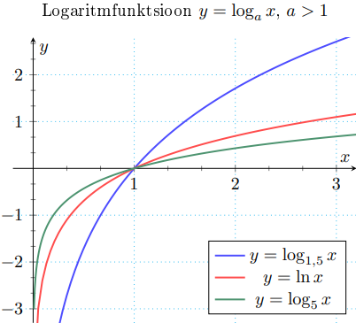
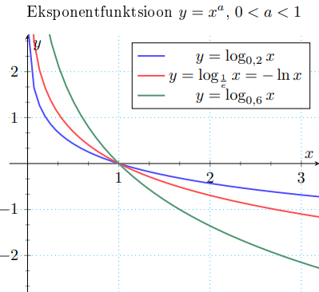

Logaritmfunktsioonid
Logaritmfunktsioon
Logaritmfunktsioon y = loga x, a > 0, a ̸= 1. Kõige populaarsem nendest on naturaallogaritm ln x =
loge x
f(x) = loga x, kui a > 1
• X = (0, ∞), Y = R
• üksühene
• pöördfunktsioon: f -1(x) = ax

Eksponentfunktsioon
f(x) = loga x, kui 0 < a < 1
• X = (0, ∞), Y = R
• üksühene
• pöördfunktsioon: f -1(x) = ax

l
Logaritmfunktsiooni omadused:
• loga(xy) = loga|x| + loga|y|
• loga(x/y) = loga|x| - loga|y|
• logaxc = c loga|x|
• logax = logbx / logba
• x = alogax
• loga1 = 0
• logaa = 1
eelmine teema
järgmine teema